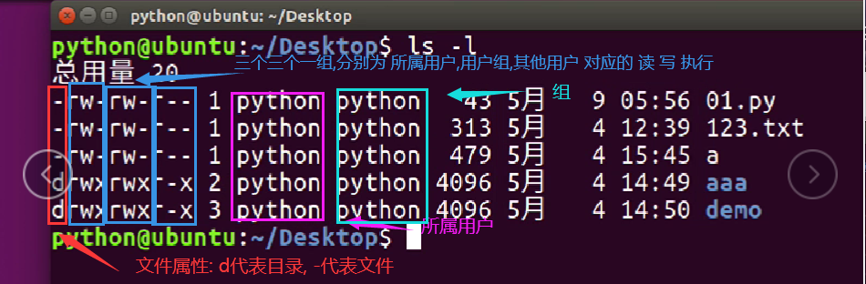
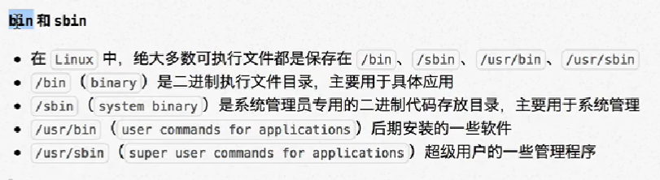
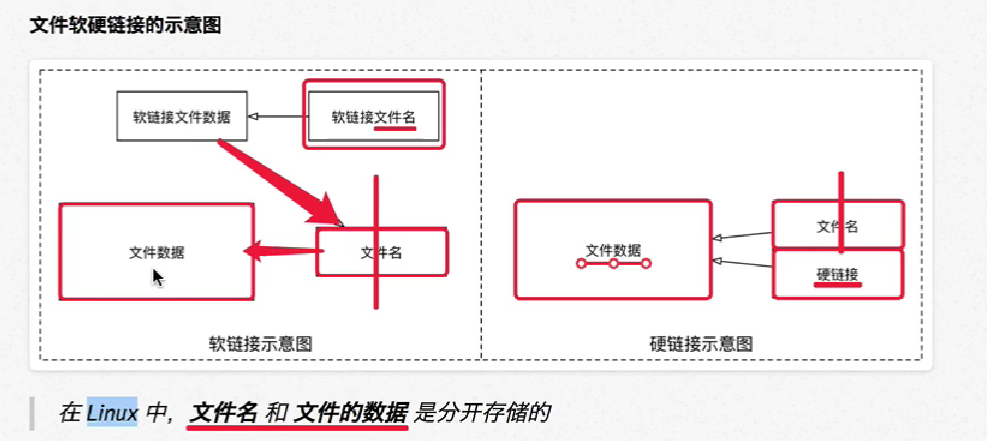
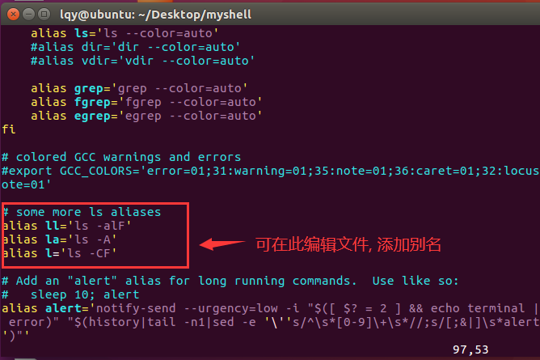

Linux快速入门
Linux 快速入门
可以通过 tab键来补全提示命令或者目录,终端命令的格式: 命令 [-选项,多个选项可以结合写] [参数] , 大多数情况可以通过 ctrl c 退出命令
磁盘管理
1 | pwd # 查看当前所在目录 即:print wrok directory |
系统与设备信息
1 | #关机/重启 |
权限与用户组
使用 ls 命令查看文件列表时, 可以看到文件所属的用户和组,以及相关权限

在/etc/passwd文件中,保存了用户的信息
权限管理命令
1 | # 权限管理 |

文件打包压缩与软件安装管理
1 | #打包压缩 |
常见软件环境安装
1 | #ssh |
vim编辑器使用
vim 有三种模式:
- 只读模式(打开默认进入)
- 可写模式(在只读模式下按a键或i键可切换) ,在此模式下按 Esc 可以退出可写模式重新回到只读模式
- 命令行模式(按shift + ; 或者大写模式下的 :) ,
1 | vim 文件名 #使用vim 打开文件(文件不存在则新建) |
保存或者退出: 在命令行模式下, 输入: ==q!== 强制退出不保存 , ==wq== 保存退出
显示/隐藏行号: 在命令行模式下, 输入: set nu / set nonu
搜索关键字: 在命令行模式下 , 输入 : ==/ 搜索的内容==
撤回: 在命令行模式下 ,输入: u
取消撤回: 在只读模式下 , 按 Ctrl 和 r
删除行和转换至某行: 在只读模式下 , 按 dd 删除某行 , 按 n 和 shift 跳转到某行
软连接和硬链接
在Linux中,文件名与文件数据是分开存储的

软连接相当于window系统的快捷方式
软连接与硬链接的区别是被链接的源文件删除后,软连接就会失效,但硬链接依然不受影响
Shell
shell基本概念:
什么是shell ?
shell(外壳) 是一个用c语言编写的程序 , 它是用户使用linux的桥梁, shell 既是一种命令语言 , 又是一种程序设计语言
shell 是指一种应用程序, 这个应用程序提供了一个界面, 用户通过这个界面访问操作系统内核的服务
什么是脚本?
脚本简单说就是一条条的文字命令 , 这些命令是可以看到的(可以用文本编辑器编辑) , 常见的脚本: JavaScript , VBscript , ASP , JSP, PHP , Shell , python ,Ruby , JavaFx
Shell 种类
在linux中有很多类型的shell , 不同的shell 具备不同的功能 ,shell还决定了脚本中函数的语法, linux中默认的shell 是 ==/bin/bash== , 流行的shell 有 : ash , bash , ksh , csh , zsh
shell 入门
编写一个hello.sh , 内容如下:
1 | echo "hello world" ; |
随后使用chmod hello.sh +rwx 给文件添加权限 , 最后运行命令 ./hello.sh , **注意: 即使在当前目录下也不能使用hello.sh**去运行 , 因为这样系统会去寻找Path(即系统环境变量)下的路径,而Path里只有: /bin , /sbin , /user/sbin 等路径
Shell变量
1 | #定义变量: |
==注意事项:==
变量命名规范与大多数C语言类似,不支持中文汉字,并且在变量名后面的等号不能有空格 ,不可使用关键字(可用help命令查询)
反引号引用自带命令
1 | #内置显示时间命令 |
接受用户输入
语法格式;
1 | read -p "提示信息" 变量名 |
如下例子演示接受用户输入的文件路径然后根据此字符串创建文件
1 | read -p "Enter the path name of the file you want to create!" filePath ; |
扩展:只读变量(常量):
语法格式:
1 | readonly 变量名 #此变量会被修饰被常量 |
扩展:删除变量:
语法格式:
1 | unset 变量名 |
条件判断语句
shell 中貌似没有 switch 语句,
与大多数编程语言不同: 没有{} ,而是采用了then , if语句最后结束要加个 fi , 条件内容不需要加括号 , else if 写成了 elif
注意!!! 条件表达式 想使用 <, > , =<, >= 等符号 表达式格式为: (( 条件 ))
1 | 语法1: |
运算符
**原生bash不支持简单的数学运算 ,但是可以通过其他命令来实现,例如 awk , expr(最常用) , ==注意:除了赋值等号之间不能用空格隔开,其大多数都必须用空格隔开== **
expr是一款表达式计算工具, 如可以在终端中使用命令expr 2 + 2 , 需要注意的是:
==表达式中的运算数和运算符之间要有空格隔开,这里与大多数编程语言不同==
由于expr也是一个原生命令 , 故在shell中使用时需要用 反引号包裹 例如:
1
2val=`expr 2 + 2` ;
echo "$val" ;
算术运算符
| 运算符 | 说明 | 举例 |
|---|---|---|
| + | 加法 | expr $a + $b 结果为 30。 |
| - | 减法 | expr $a - $b 结果为 -10。 |
| * | 乘法 | expr $a \* $b 结果为 200。 |
| / | 除法 | expr $b / $a 结果为 2。 |
| % | 取余 | expr $b % $a 结果为 0。 |
| = | 赋值 | a=$b 把变量 b 的值赋给 a。 |
| == | 相等。用于比较两个数字，相同则返回 true。 | [ $a == $b ] 返回 false。 |
| != | 不相等。用于比较两个数字，不相同则返回 true。 | [ $a != $b ] 返回 true。 |
注意：==条件表达式要放在方括号之间，并且要有空格==，例如: [$a==$b] 是错误的，必须写成 **[ $a == $b ]**。
例:
1 | a=10 ; |
关系运算符
关系运算符只支持数字，不支持字符串，除非字符串的值是数字。
下表列出了常用的关系运算符，假定变量 a 为 10，变量 b 为 20：
| 运算符 | 说明 | 举例 |
|---|---|---|
| -eq | 检测两个数是否相等，相等返回 true。**(equal)** | [ $a -eq $b ] 返回 false。 |
| -ne | 检测两个数是否不相等，不相等返回 true。 (not equal ) | [ $a -ne $b ] 返回 true。 |
| -gt | 检测左边的数是否大于右边的，如果是，则返回 true。**(相当于 > , greater than)** | [ $a -gt $b ] 返回 false。 |
| -lt | 检测左边的数是否小于右边的，如果是，则返回 true。**(相当于 < , less than)** | [ $a -lt $b ] 返回 true。 |
| -ge | 检测左边的数是否大于等于右边的，如果是，则返回 true。**( >= ,greater than equal)** | [ $a -ge $b ] 返回 false。 |
| -le | 检测左边的数是否小于等于右边的，如果是，则返回 true。**(<= , less than equal)** | [ $a -le $b ] 返回 true。 |
逻辑(布尔)运算符
下表列出了常用的布尔运算符，假定变量 a 为 10，变量 b 为 20：
| 运算符 | 说明 | 举例 |
|---|---|---|
| ! | 非运算，表达式为 true 则返回 false，否则返回 true。 | [ ! false ] 返回 true。 |
注意: 使用下面的逻辑运算符需要 用两个 方括号d
| 运算符 | 说明 | 举例 |
|---|---|---|
| && | 逻辑的 AND | [[ $a -lt 100 && $b -gt 100 ]] 返回 false |
| || | 逻辑的 OR | [[ $a -lt 100 || $b -gt 100 ]] 返回 true |
字符串运算符
下表列出了常用的字符串运算符，假定变量 a 为 “abc”，变量 b 为 “efg”：
| 运算符 | 说明 | 举例 |
|---|---|---|
| = | 检测两个字符串是否相等，相等返回 true。 | [ $a = $b ] 返回 false。 |
| != | 检测两个字符串是否不相等，不相等返回 true。 | [ $a != $b ] 返回 true。 |
| -z | 检测字符串长度是否为0，为0返回 true。 | [ -z $a ] 返回 false。 |
| -n | 检测字符串长度是否不为 0，不为 0 返回 true。 | [ -n “$a” ] 返回 true。 |
| $ | 检测字符串是否为空，不为空返回 true。 | [ $a ] 返回 true。 |
文件测试运算符d
| 操作符 | 说明 | 举例 |
|---|---|---|
| -e file | 检测文件（包括目录）是否存在，如果是，则返回 true。 | [ -e $file ] 返回 true。 |
| -d file | 检测文件是否是目录，如果是，则返回 true。 | [ -d $file ] 返回 false。 |
| -f file | 检测文件是否是普通文件（既不是目录，也不是设备文件），如果是，则返回 true。 | [ -f $file ] 返回 true。 |
| -s file | 检测文件是否为空（文件大小是否大于0），不为空返回 true。 | [ -s $file ] 返回 true。 |
| -r file | 检测文件是否可读，如果是，则返回 true。 | [ -r $file ] 返回 true。 |
| -w file | 检测文件是否可写，如果是，则返回 true。 | [ -w $file ] 返回 true。 |
| -x file | 检测文件是否可执行，如果是，则返回 true。 | [ -x $file ] 返回 true。 |
| -b file | 检测文件是否是块设备文件(如u盘之类的)，如果是，则返回 true。 | [ -b $file ] 返回 false。 |
| -c file | 检测文件是否是字符设备文件，如果是，则返回 true。 | [ -c $file ] 返回 false。 |
| -g file | 检测文件是否设置了 SGID 位，如果是，则返回 true。 | [ -g $file ] 返回 false。 |
| -k file | 检测文件是否设置了粘着位(Sticky Bit)，如果是，则返回 true。 | [ -k $file ] 返回 false。 |
| -p file | 检测文件是否是有名管道，如果是，则返回 true。 | [ -p $file ] 返回 false。 |
| -u file | 检测文件是否设置了 SUID 位，如果是，则返回 true。 | [ -u $file ] 返回 false。 |
shell脚本附带参数选项
自定义的shell 脚本其实也可以设置命令选项, 接收选项的方式通过 $1 $2 $3 $4 等去接受, 分别代表了第一个选项,第二个选项第三个选型 …
1 | #讲命令选型打印出来 , $0表示脚本文件自身 |
案例:自定义命令user -add 用户名 添加用户, user -del 用户名 删除用户 ,
- 编写shell文件,
1 | if [$1 = "-add"] |
随后定义别名 , 在
~/.bashrc文件中添加如下内容:1
alias user='shell文件路径及文件名.sh'
别名(alias)
Linux允许我们给脚本文件或者内置命令自定义别名 , 别名配置信息都存储在~/.bashrc,文件,
1 | alias -p #查看已经设置的别名 |

==注意:添加别名后需要切换一下用户才能生效==
SSH远程链接
- 安装SSH
- 根据主机ip进行链接
CentOS 命令补充
防火墙放行
1 | firewall-cmd --permanent --add-service=dns |
网卡相关配置
1 | # 查看网卡信息 |